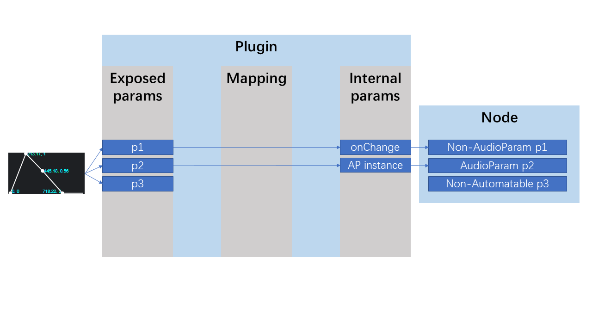
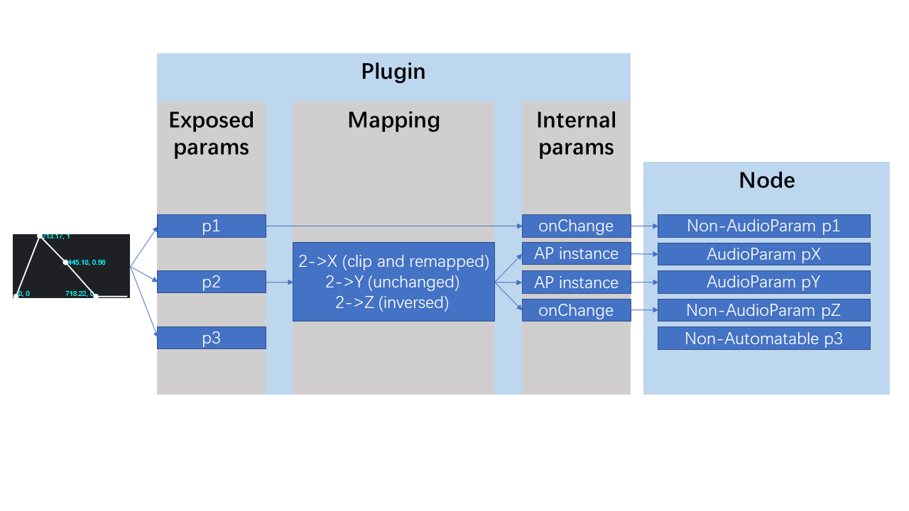
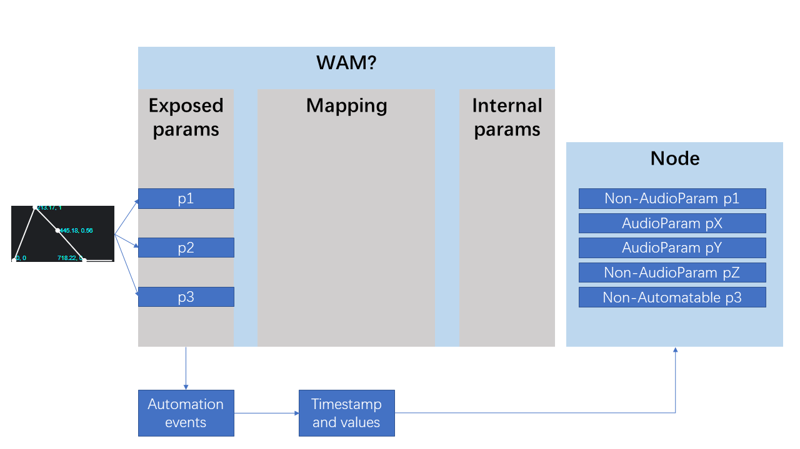

Parameter Manager
This document provides a description of the parameter manager used in the WebAudioModule SDK, and a guide to handle parameters in an WebAudioModule.
Motivation
It is conventional for audio plugin users and hosts to schedule plugin parameter changes with an automation timeline. The WebAudio API provides the AudioParam interface, with its AtTime methods, to allow developers to schedule sample-accurate a-rate or buffer-accurate k-rate automations in several ways.
It is important for an WebAudioModule to control its parameters sample-accurately. However, the AudioParams exist only inside AudioNodes, they are not constructable independently. In order to have customizable AudioParams that control different parameters, we designed the Parameter Manager, which is mainly an AudioWorkletNode that creates user defined AudioParams, then transform them to AudioNode outputs.
Plugin Design Patterns
The WebAudioModule developer should declare every parameters that are controllable by the host application in the descriptor.json. These are the plugin's exposed parameters. (see ParametersDescriptor), accessible under the plugin's paramsConfig field.
It is possible to control different variables in the plugin. These variables, we call them internal parameters, can be AudioParams or an event handler that will be called while the values change, under a certain fire rate. A config of these parameters is accessible under the plugin's internalParamsConfig field. (see InternalParametersDescriptor)
In some use cases, the plugin need to control multiple internal parameters with one single exposed parameters, and with different value scalings or mappings. For example, an exposed parameter mix need to be clipped from 0 to 0.5 and be mapped to 0 and 1 for an internal parameter dry; in the same time, it need to be clipped from 0.5 to 1 and be mapped to 1 and 0 for an internal parameter wet. This can be done easily by declaring a paramsMapping. (see ParametersMapping)
There are four main design patterns to link the exposed parameters to the internal parameters.
- Direct + event listener pattern, no need to declare the
internalParamsConfigand theparamsMapping

If the developer leaves the
internalParamsConfigand theparamsMappingunset, the SDK will derive theinternalParamsConfigfrom theparamsConfig, which means they are containing same parameter names and values. TheparamsMappingwill be filled with peer to peer mappings with no value mapping.
In this case, the developer can listen to the
change:internalParam:${paramName}event to handle the internal parameters value changes, up to 30 times per second. The developer can also connect manually outputs of theparamMgrtoAudioParams.
For example:
plugin.on('change:internalParam:enabled', (value, prevValue) => {
console.log(`Param "enabled" has been changed from ${prevValue} to ${value}`);
});
// audioNode.gain is an AudioParam
if (plugin.initialized) plugin.paramMgr.connectIParam('gain', audioNode.gain);Be aware: the paramMgr is only availble after initialized.
- Direct + default event listeners or
AudioParams pattern, need to declare theinternalParamsConfig

If the developer declared the
internalParamsConfigand leaves theparamsMappingunset, the SDK will automatically make links between the exposed parameters and the internal parameters, taking account of the givingAudioParam, or theonChangecallback with theautomationRate.
The
paramsMappingwill be filled with peer to peer mappings with no value mapping.
For example:
plugin.internalParamsConfig = {
enabled: {
onChange: (value, prevValue) => {
console.log(`Param "enabled" has been changed from ${prevValue} to ${value}`);
}, // callback
automationRate: 10 // 10 times/sec
},
gain: audioNode.gain // AudioParam
};- Mapping + default event listeners or
AudioParams pattern, need to declare theinternalParamsConfigand theparamsMapping

This pattern is useful when a different mapping is needed between the internal parameters and the exposed parameters.
A value mapping can be set via
sourceRangeandtargetRangefields. The incoming value of the exposed parameter will be firstly clipped usingsourceRange, then the value in thesourceRangewill be remapped to thetargetRange. If these fields remainundefined, they will be the same as theminValueand themaxValueof the exposed parameter.
If one parameter name appears in both
paramsConfigandinternalParamsConfig, the mapping will be created automatically if it is not declared explicitly in theparamsMapping.
Dynamically change the
paramsMappingis possible using the setter.
For example:
// in the descriptor.json
{
//...
"params": {
"mix": {
"defaultValue": 0.5,
"minValue": 0,
"maxValue": 1
}
},
//...
}// in the JavaScript code
plugin.internalParamsConfig = {
dryGain: dryGainNode.gain,
wetGain: wetGainNode.gain,
};
plugin.paramsMapping = {
mix: {
dryGain: {
sourceRange: [0.5, 1],
targetRange: [1, 0],
},
wetGain: {
sourceRange: [0, 0.5],
targetRange: [0, 1],
},
},
};- Handle automations alternatively pattern, no need to declare the
internalParamsConfigand theparamsMapping

If the developer need to handle automation in another way, just listen to the
automationevents. For example:
plugin.on('automation', (methodType, paramName, ...args) => {
console.log(`The host just called the method ${methodType} on param ${paramName} with args ${JSON.stringify(args)}`)
});Normalized, Exponent and Time Conversion
It is possible to schedule parameter automations with a normalized value, or get normalized parameter values. If an exponent factor is declared in the descriptor.json, it will be aware when the normalized value is converted to the parameter value.
All AudioParam methods are exposed in the Parameter Manager with their normalized version. The list is under the ParamMgrNode interface, including time conversion methods convertTimeToFrame and convertFrameToTime.
Need to go deeper?
Sample-accurate internal parameters and exposed parameters values, with a frame stamp, are accessible in the AudioWorkletGlobalScope. The developer can get them by getting globalThis.WebAudioModuleParams[instanceId], the instance identifier instanceId is unique to each WebAudioModule instance. See AudioWorkletGlobalScope.
Use a Plugin from a Host
A host usually deals with exposed parameters of a plugin, set or get the values instantly or schedule automations. These operations are available using the parameter manager.
For example, to get the values / normalized values of all the exposed parameters:
const values = plugin.paramMgr.getParamsValues();
const normalizedValues = plugin.paramMgr.getNormalizedParamsValues();It is possible to manipulate parameters with their AudioParam instance:
let audioParam;
const audioParamsMap = plugin.paramMgr.getParams();
audioParam = audioParamsMap["mix"];
// or
audioParam = plugin.paramMgr.getParam("mix");
// or
audioParam = plugin.paramMgr.parameters.get("mix");The AudioParam got is an extended version of native one, having all the normalized version of native methods, emitting the automation events.
audioParam.value = 0.5;
audioParam.normalizedValue = 0.5;Methods:
interface MgrAudioParam extends AudioParam {
normalize(value: number): number;
denormalize(value: number): number;
cancelAndHoldAtTime(cancelTime: number): MgrAudioParam;
cancelScheduledValues(cancelTime: number): MgrAudioParam;
exponentialRampToValueAtTime(value: number, endTime: number): MgrAudioParam;
exponentialRampToNormalizedValueAtTime(value: number, endTime: number): MgrAudioParam;
linearRampToValueAtTime(value: number, endTime: number): MgrAudioParam;
linearRampToNormalizedValueAtTime(value: number, endTime: number): MgrAudioParam;
setTargetAtTime(target: number, startTime: number, timeConstant: number): MgrAudioParam;
setNormalizedTargetAtTime(target: number, startTime: number, timeConstant: number): MgrAudioParam;
setValueAtTime(value: number, startTime: number): MgrAudioParam;
setNormalizedValueAtTime(valueIn: string, startTime: number): MgrAudioParam;
setValueCurveAtTime(values: number[] | Float32Array | Iterable<number>, startTime: number, duration: number): MgrAudioParam;
setNormalizedValueCurveAtTime(values: number[] | Float32Array | Iterable<number>, startTime: number, duration: number): MgrAudioParam;
}